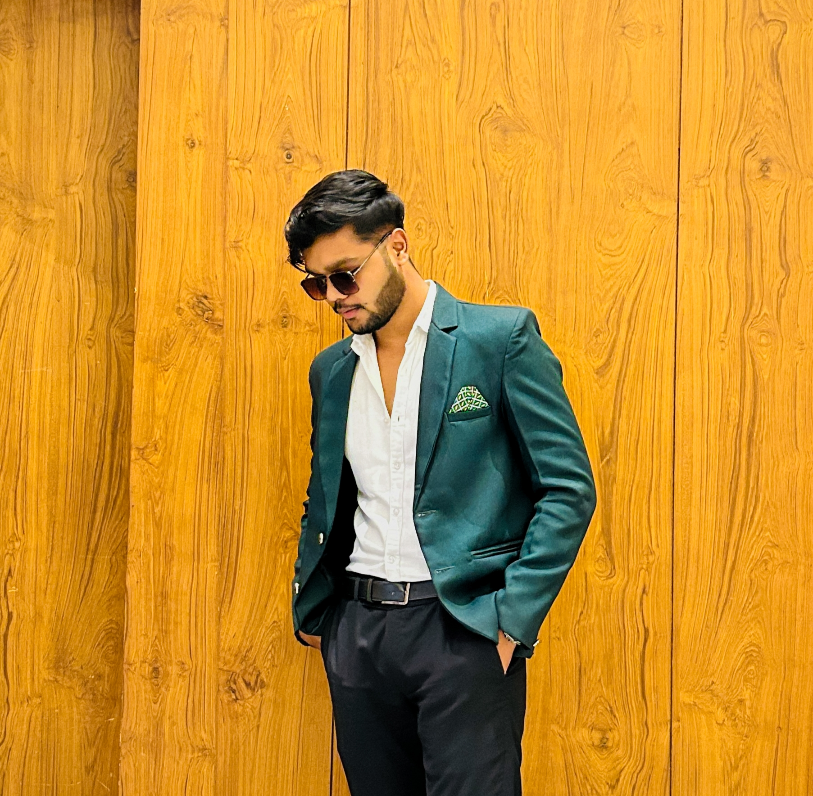

Hi, my name is Vansh
I am a passionate

My Passsion
WEB DEVELOPER
Hi! I'm Vansh Yadav, a passionate web developer with a solid foundation in both frontend and backend technologies. I enjoy building clean, responsive, and user-friendly websites that solve real problems and create smooth digital experiences. As a self-motivated learner, I'm always exploring new tools, frameworks, and best practices to level up my skills and deliver modern, efficient code.

Photography
Hii I'm also photographer i love capturing moments in my camera . In my personal opinion Nature has always been my escape and my teacher.
With my camera in hand, I find peace in chaos and color in simplicity.
Every photo I take is a moment of gratitude—an appreciation for the beauty around us that often goes unnoticed.
I hope my photos make you feel something: calm, wonder, inspiration—or simply the urge to go outside.

YOUTUBER
As a travel content creator with a passion for storytelling and capturing the magic of places, people, and culture around the world. I create engaging photo and video content that showcases hidden gems, local experiences, and unforgettable adventures. Whether it's hiking through mountains, exploring cities, or sharing travel tips, I aim to inspire others to discover the world for themselves.

Work Experiences

HTML Developer
I'm an HTML Developer passionate about building clean, responsive, and accessible web pages.

CSS Developer
As a CSS Developer skilled in creating visually appealing, responsive, and consistent designs across all devices.

JAVASCRIPT Developer
a JavaScript Developer focused on building interactive, dynamic, and user-friendly web experiences

YOUTUBER
YouTuber who loves capturing real stories from real places. From scenic views to local culture, I create vlogs that inspire, inform, and entertain.

TRAVELER Content Creator
travel content creator on Instagram, sharing moments from places I explore. From hidden gems to famous spots